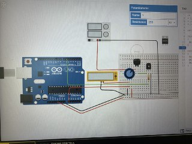
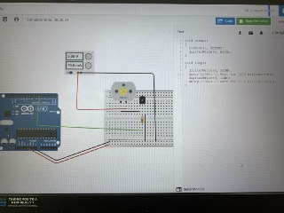

Embedded Programming
TinkercaD is a free online collection of software tools convenient for users to learn how current flow through the circuit. Through Tinkercad we are able to examine the virtual circuit before applying the circuit into our project.
Examples of circuits that were done in Tinkercad.
 